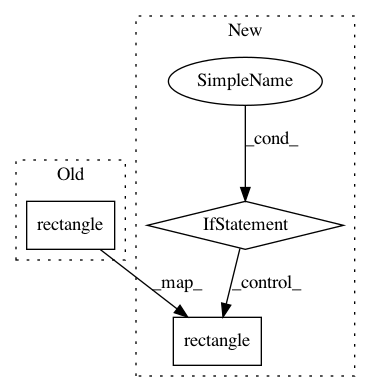

6d46047109204e388fd54f2d8e20fc07576ce3b7,demo.py,,main,#Any#,23
Before Change
for track,det in zip(tracker.tracks,detections):
bbox = track.to_tlbr()
cv2.rectangle(frame, (int(bbox[0]), int(bbox[1])), (int(bbox[2]), int(bbox[3])),(255,255,255), 4)
bbox = det.to_tlbr()
cv2.rectangle(frame,(int(bbox[0]), int(bbox[1])), (int(bbox[2]), int(bbox[3])),(255,0,0), 4)
cv2.putText(frame, str(track.track_id),(int(bbox[0]), int(bbox[1])),0, 5e-3 * 480, (124,252,0),4)
cv2.imshow("", frame)
After Change
tracker.update(detections)
for track,det in zip(tracker.tracks,detections):
if track.is_confirmed() and track.time_since_update <=0:
bbox = track.to_tlbr()
cv2.rectangle(frame, (int(bbox[0]), int(bbox[1])), (int(bbox[2]), int(bbox[3])),(255,255,255), 4)
bbox = det.to_tlbr()
cv2.rectangle(frame,(int(bbox[0]), int(bbox[1])), (int(bbox[2]), int(bbox[3])),(255,0,0), 4)
cv2.putText(frame, str(track.track_id),(int(bbox[0]), int(bbox[1])),0, 5e-3 * 480, (124,252,0),4)
cv2.imshow("", frame)
In pattern: SUPERPATTERN
Frequency: 3
Non-data size: 3
Instances
Project Name: Qidian213/deep_sort_yolov3
Commit Name: 6d46047109204e388fd54f2d8e20fc07576ce3b7
Time: 2018-05-15
Author: xhx1247786632@gmail.com
File Name: demo.py
Class Name:
Method Name: main
Project Name: deepfakes/faceswap
Commit Name: e9ea863b293c703aa7612bb9163eff10e9d6ae9a
Time: 2019-01-06
Author: julien.seitz@gmail.com
File Name: plugins/extract/detect/dlib_cnn.py
Class Name: Detect
Method Name: process_output
Project Name: Qidian213/deep_sort_yolov3
Commit Name: 6c62f75eaf1c6beffad3db2850d2469fd0c2e8e2
Time: 2018-05-15
Author: xhx1247786632@gmail.com
File Name: demo.py
Class Name:
Method Name: main